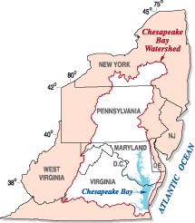
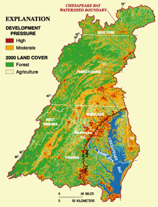
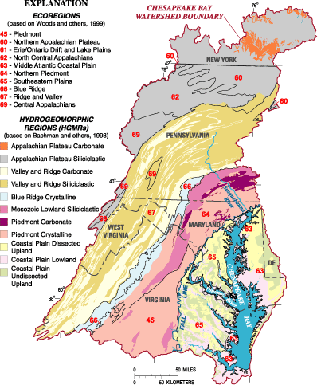

U.S. Geological Survey Chesapeake Bay Studies: Scientific Solutions for a Healthy Bay and Watershed by Scott W. Phillips

{kind=link}
U.S. Geological Survey Chesapeake Bay Studies: Scientific Solutions for a Healthy Bay and Watershed
USGS Fact Sheet FS 2006-3046
![ Figure 1. Potential future development pressure in the Chesapeake Bay watershed in 2010 (from Claggett and Bisland, 2004). [In spite of 20 years of restoration efforts, the Bay and its watershed continue to have poor water quality, inadequate habitat, and threatened fish and bird populations. Future ecosystem conditions will be further affected by projected patterns of human-population increase (shown on the figure) and the associated impact. The USGS has the critical role of providing objective scientific information to document and understand ecosystem conditions. This information is used to improve implementation, and assess the effectiveness of, conservation and restoration strategies in the Bay and its watershed.]](figure1_big.gif){kind=link}
The Role of the U.S. Geological Survey in Restoring the Nation's Largest Estuary
The U.S. Geological Survey (USGS), the science agency for the Department of Interior (DOI), has the critical role of providing objective science to document and understand ecosystem change in the Chesapeake Bay and its watershed. The human population in the Bay watershed, which grew from 8.1 million in 1950 to almost 16 million in 2000, has resulted in degraded water quality, loss of habitat, and declines in fish and bird populations. USGS scientists are leaders in understanding cause and effect of human activities and natural changes on water quality and the health of the ecosystem. The USGS interacts with resource managers and policy makers to use the science to adapt approaches for implementation, and assess effectiveness of, management actions for ecosystem conservation, restoration, and sustainability.
{kind=link}
Since the mid-1980s, the USGS has been an active partner in the Chesapeake Bay Program (CBP), a multi-agency partnership led by the U.S. Environmental Protection Agency, working to achieve the restoration goals set forth in the Chesapeake 2000 agreement. This agreement established over 100 restoration commitments to be addressed by 2010. In 2005, which was the mid-point of the agreement, there was growing concern at all levels of government and by the public that ecological conditions in the Bay and its watershed had not significantly improved. The slow rate of improvement, coupled with the projected impact of human-population increase in the Bay watershed (fig. 1), implied that many desired ecological conditions will not be achieved by 2010. To address these challenges, the USGS wrote a new science plan for 2006-2011 (Dead URL), and is synthesizing key findings to highlight the accomplishments from science activities for 2000-2005.
{kind=link}
U.S. Geological Survey Science Plan
The revised Chesapeake Bay science plan for 2006-2011 (Phillips, 2005) is designed to provide integrated science for effective ecosystem conservation and restoration. After assessing needs and priorities of the CBP and DOI partners, the USGS developed four science themes based on its capabilities and strengths:
- Impact of human activities on land use;
- Factors affecting water quality and quantity;
- Ability of habitat to support fish and bird populations; and
- Synthesis and forecasting to improve ecosystem assessment, conservation, and restoration.
For each science theme, the USGS established objectives (table 1) that will be achieved through a combination of monitoring, modeling, research, and assessment to provide science that can be used for more effective management actions to address the impact of human activities (fig. 2) on the ecosystem. To meet the science theme objectives, the USGS will: (a) provide an improved understanding of the ecosystem to better target implementation of current conservation and restoration strategies, (b) assess ecosystem change to help evaluate the effectiveness of management activities, (c) forecast the potential impacts of increasing human population and climate variability, and (d) synthesize the findings and provide implications to help policy makers and resource managers adapt improved approaches for ecosystem conservation, restoration, and sustainability.
{kind=link}
The USGS is focusing the majority of its efforts on addressing the science themes in the Bay watershed because (a) most conservation and restoration activities will be implemented in the watershed, (b) understanding the function of the different hydrologic settings (fig. 3) and habitats in the watershed in processing nutrients and sediment will provide a more cost-effective approach to implementing management actions, and (c) land-use change in the watershed will continue to be the greatest stress on the health of biological communities in the watershed and the Bay. Additionally, the USGS is addressing the relation between conditions in the watershed and impacts to water quality and habitat in the near-shore areas of the estuary.
{kind=link}
| USGS Science Theme | Objectives | Management Applications and Benefits |
|---|---|---|
| Impact of Human Activities on Land Use |
|
|
| Factors Affecting Water Quality and Quantity |
|
|
| Ability of Habitat to Support Fish and Bird Populations |
|
|
| Synthesis and Forecasting to Improve Ecosystem Assessment, Conservation, and Restoration |
|
|

Implementing U.S. Geological Survey Chesapeake Bay Studies
The success of implementing projects to address the science themes is achieved through collaboration between multiple USGS National Programs, Science Centers, and partners (fig. 4). Projects are designed by scientists to meet the objectives of the USGS Chesapeake Bay science themes and missions of the contributing USGS National Programs. The efforts of multiple USGS scientists under each science theme are closely coordinated through the USGS Integrated Synthesis and Forecasting Team, and with the staff of USGS Regional offices and Science Centers. Appropriate Federal, State, local, and academic CBP partners work with the USGS to jointly conduct monitoring, modeling, research, and assessment activities associated with each science theme. The USGS interacts with resource managers and policy makers to make informed decisions for conservation and restoration activities based on USGS findings, and to consider future strategies to promote an ecologically sustainable ecosystem.
![ Figure 3: Different landscape settings in the Chesapeake Bay watershed (modified from Phillips, 2005). [The movement of nutrients, sediment, and contaminants in the watershed and their delivery to the estuary are influenced by the different landscape settings, which have unique combinations of physical and biological characteristics. The USGS is providing a better understanding of the influence of landscape settings on water quality, habitat, and fish and bird populations to improve implementation and assessment of conservation and restoration activities. The USGS will conduct the majority of its activities in the watershed because: (1) human-population growth and land-use change will continue to be the greatest threats to the ecosystem (2) the majority of conservation and restoration actions will be implemented on land. The USGS will work with partners to relate the changes in the watershed to the changes in the Bay and its tidal estuaries.]](Webfigure3_big.gif){kind=link}
Figure 3: Different landscape settings in the Chesapeake Bay watershed (modified from Phillips, 2005). [The movement of nutrients, sediment, and contaminants in the watershed and their delivery to the estuary are influenced by the different landscape settings, which have unique combinations of physical and biological characteristics. The USGS is providing a better understanding of the influence of landscape settings on water quality, habitat, and fish and bird populations to improve implementation and assessment of conservation and restoration activities. The USGS will conduct the majority of its activities in the watershed because:
- (1) human-population growth and land-use change will continue to be the greatest threats to the ecosystem
- (2) the majority of conservation and restoration actions will be implemented on land. The USGS will work with partners to relate the changes in the watershed to the changes in the Bay and its tidal estuaries.]
| Biology | Geology | Geography | Water | Geospatial Information office |
|---|---|---|---|---|
|
|
|
|
|
| USGS REGIONAL OFFICES and SCIENCE CENTERS | ||||
| ||||
|
Geographic Science Center: Eastern Region Water Science Centers: MD-DE-DC,NY,PA,VA,WVA, and Eastern Region Research | ||||
| USGS CHESAPEAKE BAY STUDIES and SCIENCE THEMES | ||||
|
||||
| Figure 4: USGS programs, offices, and Chesapeake Bay Studies. [The USGS jointly plans and implements activities between multiple USGS National Programs, offices, and partners to enhance interdisciplinary studies for each of the Chesapeake Bay science themes.] | ||||
References
- Bachman, L.J., Lindsey, B.D., Brakebill, J.W., and Powars, D.S., 1998,Ground-water discharge and base-flow nitrate loads of nontidal streams, and their relation to a hydrogeomorphic classification of the Chesapeake Bay watershed, Middle Atlantic coast: U.S. Geological Survey Water-Resources Investigations Report 98-4059, 71 p.
- Claggett, P.R., and Bisland, C., 2004, Assessing the vulnerability of forests and farmlands to development in the Chesapeake Bay watershed, in Proceedings of the IASTED International Conference on Environmental Modeling and Simulation, November 22-24, 2004, St. Thomas, U.S. Virgin Islands
- Phillips, S.W., 2005, The U.S. Geological Survey Chesapeake Bay science plan, 2006-2011: U.S. Geological Survey Open File Report 2005-1440, 53 p.
- U.S. Environmental Protection Agency Chesapeake Bay Program (CBP) and the Integration and Analysis Network (IAN) at the University of Maryland Center for Environmental Science, 2005, Chesapeake Bay environmental models, 4 p.
- Woods, A.J., Omernik, J.O., and Brown, D.D., 1999, Level III and IV ecoregions of Delaware, Maryland, Pennsylvania, Virginia, and West Virginia: Corvallis, Oregon, U.S. Environmental Protection Agency, National Health and Environmental Effects Research Laboratory, 24 p.

For further information contact:
- Scott Phillips
- USGS Chesapeake Bay Coordinator
- 8987 Yellow Brick Road
- Baltimore, Maryland 21237
- (swphilli@usgs.gov)
or visit the USGS Chesapeake Bay homepage on the World Wide Web at:
USGS Fact Sheet FS 2006-3046
Information: webmaster@md.water.usgs.gov